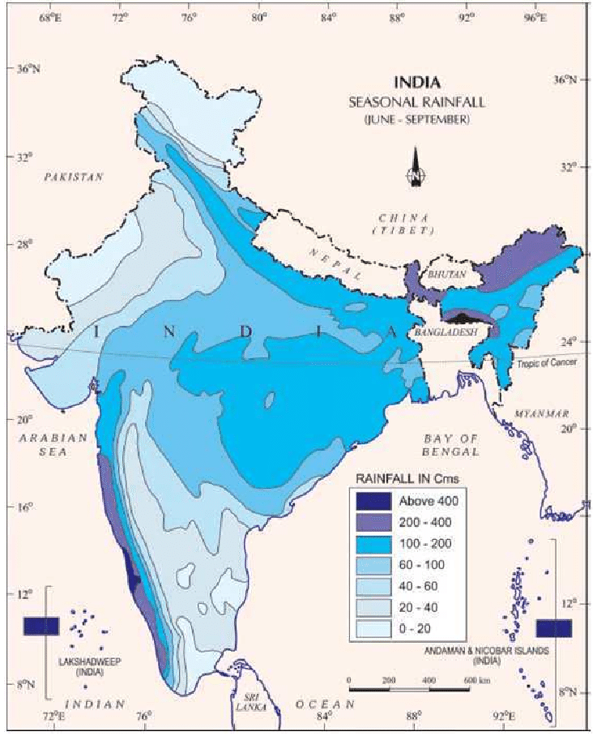
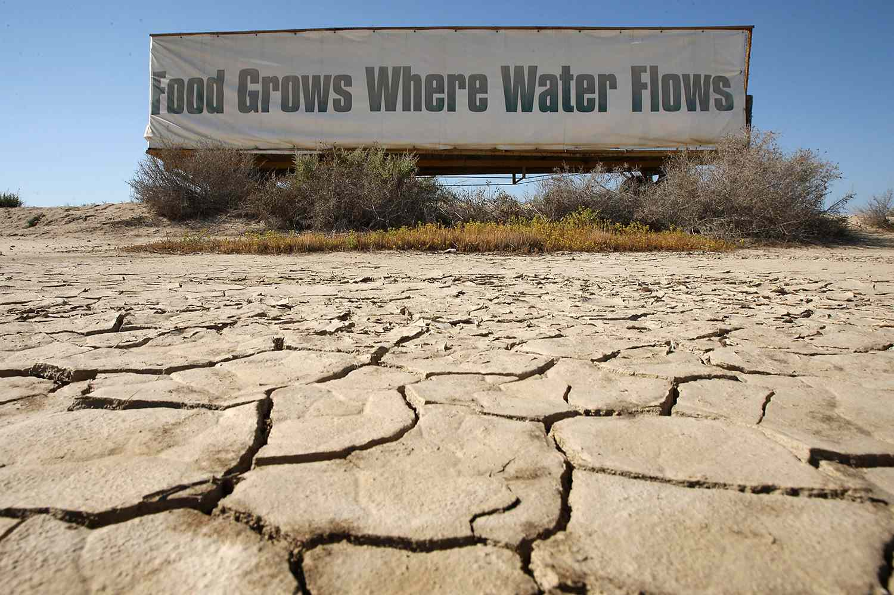

Causes of Water Scarcity
- Climate Change:
- Altered Rainfall Patterns: Changes in precipitation patterns, including irregular or reduced rainfall, affect water availability, leading to drought and scarcity.
- Increased Temperatures: Higher temperatures can accelerate evaporation rates, causing water sources to dry up more rapidly, contributing to scarcity.

- Over-Extraction and Over-Consumption:
- Agricultural Demand: Inefficient irrigation methods and excessive water use in farming lead to water depletion and scarcity.
- Industrial and Domestic Use: Inadequate conservation and high demand strain water supplies in industries and households.

- Population Growth:
- Increased Water Demand: Rising global population intensifies the strain on available water sources as more people require water for various needs.
- Poor Water Management:
- Inefficient Use: Wasteful practices and leaky infrastructure contribute to overuse and depletion of water sources.
- Lack of Infrastructure: Inadequate water delivery systems limit access to clean water, exacerbating scarcity.
- Environmental Degradation:
- Pollution: Contamination of water sources affects water quality, making it unsuitable for consumption.
- Deforestation and Soil Erosion: Environmental degradation affects natural water retention, impacting the availability and quality of water sources.
- Droughts and Natural Disasters:
- Drought Impact: Prolonged droughts reduce water availability, impacting agriculture, ecosystems, and community water supplies.
- Disasters: Events like floods or earthquakes can damage water infrastructure and contaminate sources, causing scarcity.

- Conflict and Political Instability:
- Water Rights Disputes: Conflicts over water rights can lead to unequal distribution and restrictions on access to water sources.
- Political Instability: Weak governance can hinder effective water management and distribution, causing scarcity in regions with poor governance or conflicts.

Addressing water scarcity requires a combination of strategies, including efficient water use, conservation, sustainable management policies, and international cooperation to ensure equitable access to clean water resources for all.